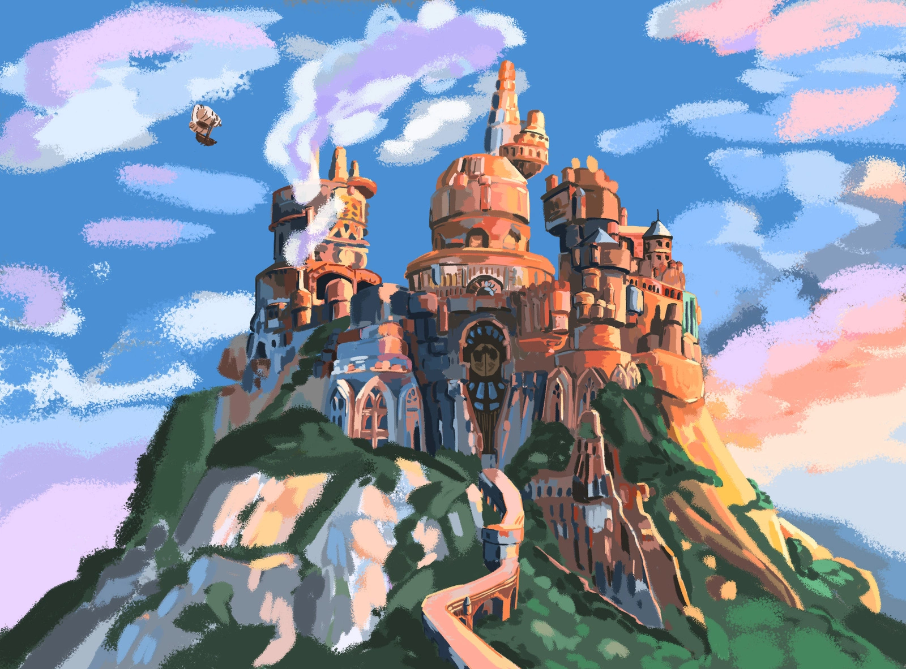

Illustrations
Illustrations I made during my free time.


A compilation of whales and other marine animals.
Fanarts
A picture of the city of Lindblum from the video game final fantasy.
Two illustrations with characters from the manga Witch hat atelier.